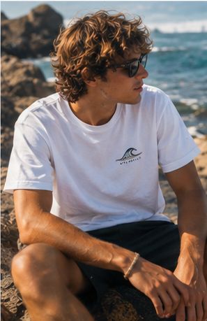
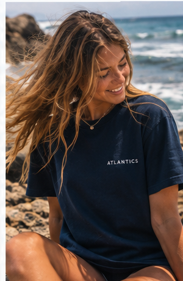
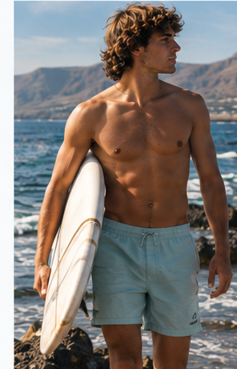
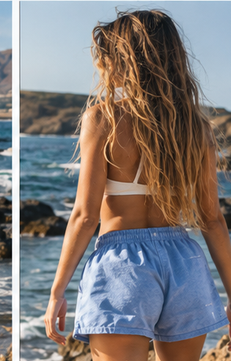
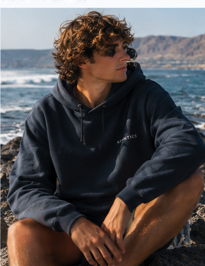
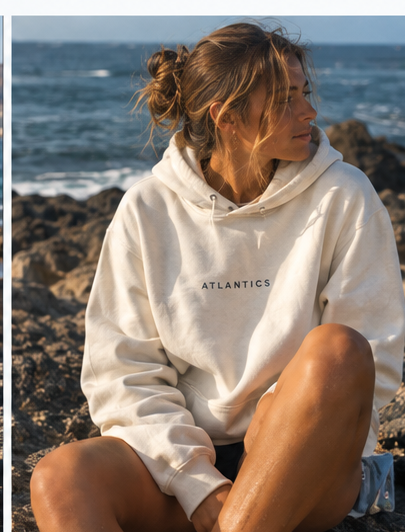
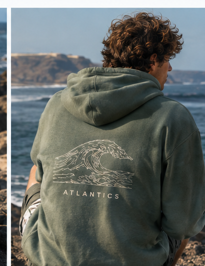

Nuestra historia
ATLANTICS es una marca de ropa nacida en Lanzarote en 2026, inspirada en el océano Atlántico y en el estilo de vida de las islas Canarias.
Queremos crear ropa cómoda y sencilla que transmita libertad, naturaleza y conexión con el mar.
Nuestras camisetas
Camisetas inspiradas en el mar y en el estilo de vida de Lanzarote.


Nuestros pantalones
Pantalones cómodos para disfrutar de cada día junto al océano.


Nuestras sudaderas
Sudaderas cómodas inspiradas en la naturaleza y los colores del Atlántico.



La influencia del Atlántico
El océano Atlántico es nuestra principal inspiración. Sus olas, sus colores y los paisajes de Lanzarote forman parte de la identidad de ATLANTICS.
Nuestra marca representa un estilo de vida libre, natural y conectado con el mar.
ATLANTICS CLUB
Forma parte de nuestra comunidad y descubre el mundo de ATLANTICS.